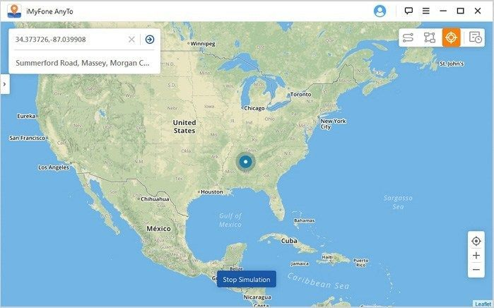

不用出門也能玩 Pokemon GO
訓練家走遍世界的輔助法寶
你有沒有試過寶可夢明明近在眼前卻因為距離而無法捕抓？
這讓眾多玩家們都十分困擾。不過，只要使用iMyFone AnyTo，那就可以安坐家中，快速傳送到全世界任何一個位置對寶可夢進行捕捉！
而且還可以更改地區，甚至可以在 iMyFone AnyTo 上的地圖中規劃移動路線，以客製化移動速度模擬出步行、自行車、開車等仿真速度，讓捕抓寶可夢和領取道具時更有優勢，當然也可以保留精準定位的歷史紀錄，暢玩虛擬世界更省時又省力。

同步附上溫馨小提示：
*若需要恢復原始位置，只需重啟 iOS 設備。
*曾經傳送過的地點將會在記錄在右上角的「歷史記錄」中，點擊即可再次造訪。
*若需要制定路線，可點擊「傳送模式」旁的「兩點模式」和「多點模式」來設定。
iMyFone AnyTo定位工具軟體可支援iPhone、iPad、iPod等行動裝置，版本需為iOS 7.0以上；電腦裝置則是Windows和Mac都有支援。
每當我們去到一個地方遊玩，常常會在社交平台標註地點，不過有時候會遇到無法準確標註的情況，
iMyFone AnyTo的出現讓你可以任意修改自己的地理位置，除了打卡更方便之外，還能實現線上環遊世界的夢想，
上一秒在泰國芭堤雅潛水，下一秒在挪威看北極光，上一小時在台北吃蚵仔煎，下一小時在日本吃生魚片。
iMyFone AnyTo位置虛擬工具就像隨意門一樣，讓定位更隨心所欲，足跡遍佈世界各地！
回到上面
參考資料